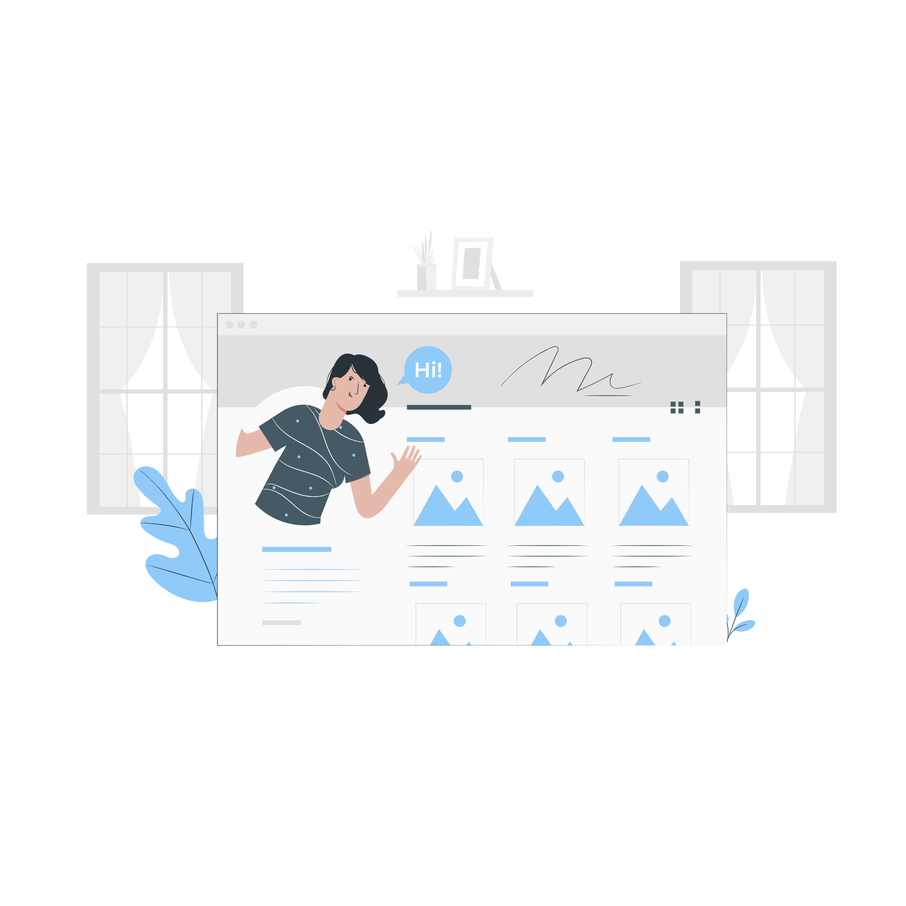
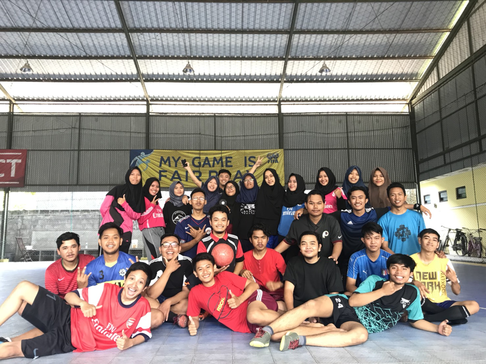
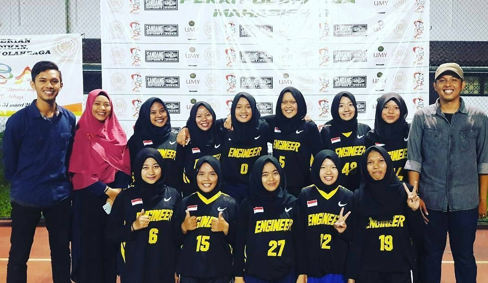
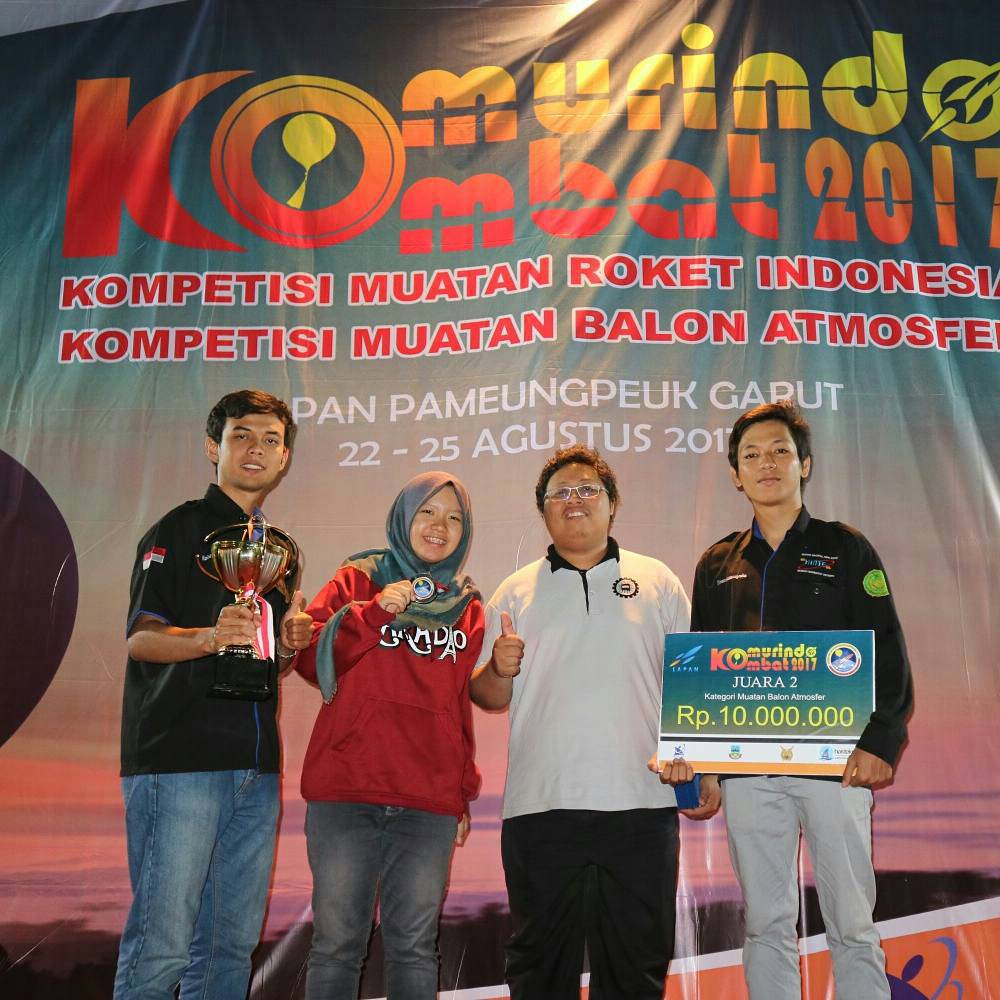
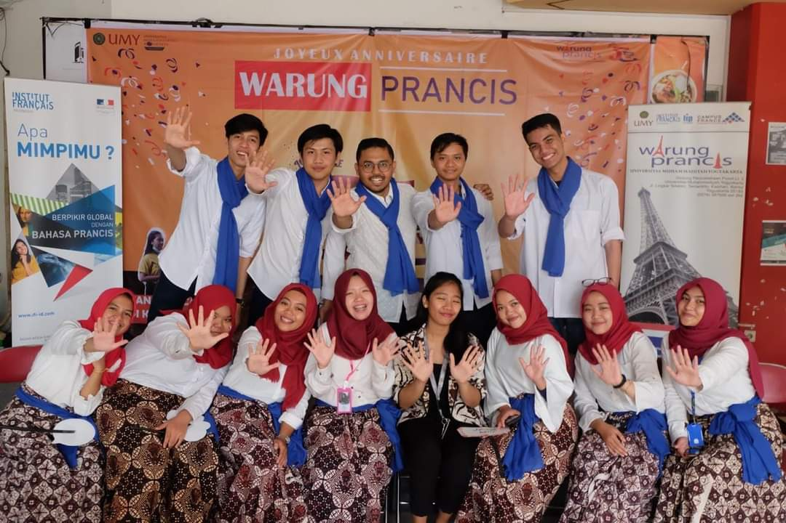

About Me
"Hello! I am Rara. I was graduated from the Department of Electrical Engineering Universitas Muhammadiyah Yogyakarta (UMY). I am fully interested in technology because it is a proper answer to alleviate the future world. Integrated technology would profoundly bring a change to face human problems. One of the emerging technologies would involve appropriately for a few years is the Internet of Things (IoT). IoT is inter-connected technology among systems that utilize some inter-disciplines. With IoT, an embedded system would be connected to the internet and displayed on the human interface. The data stored would be used to create an effective and efficient system. Also, it can control and monitor activities intensely from the internet. IoT can be implemented in various sectors such as agriculture, industry, health, smart home and others. In my experience, this technology fascinates me and sparks my spirit of curiosity to understand more about technology in IoT. I believe learning about sophisticated technology would bring a change and impact on my future surroundings."

Activities
My personality has been shaped by my surrounding. My family was the first influencer during my growing up. In addition, positive experiences and activities will impact and change my individuality. Since I decided to be independent, I have tried to participate in several activities to form a better individuality. the pictures below illustrates the most activities that I spent during my undergraduate degree.

Student Association
Joining clubs and organizations shaped me to be an adaptable person and being a cooperative team player. Also, I learn how to communicate and cooperate in a team, problem-solving skills, and new relations. In my study, I was part of the electrical engineering student association and a microcontroller and robotic club member. Here, I expanded and enhanced my skills through practices and social experiences.

Sport Club
Sport is my favorite thing to fill my leisure time. I joined in badminton and basketball clubs in an electrical engineering major and engineering faculty. Also, I participated in the traditional archery community named "Jemparingan". Exercising could train my concentration and profoundly be an energy booster to start my daily life.

KOMBAT competition
Entering several competitions started to shape my personality in competitiveness. This will help me to achieve my goals, which are reflected in being brave, strong, and not giving up easily. I participated in a robotic and payload of balloon atmosphere competition in 2019 and 2017.

Volunteering
Warung Prancis is a mini library to France's specific information in UMY resulted by cooperating between UMY and France embassy through the Institut français d'Indonésie. The aim is to introduce the crossed culture understanding between Indonesia and France. To actualize, the university open volunteer recruitment to keep and execute some daily activities at that place. I was assigned to be a graphic designer volunteer for 2 years, from 2017 to 2019. Being a volunteer developed my sensitivity and initiation in a team. In addition, I learned to be a respectful person to understand the diverse culture in my surroundings.